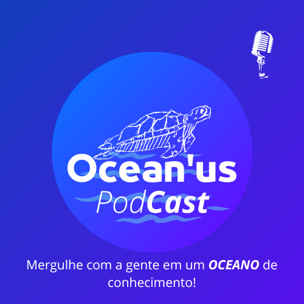

Informações de Contato:
- E-mail: thiagooliete@gmail.com
- Tel: 11 99311-1444
- GitHub: https://github.com/Thiago-Oliete
- Linkedin: www.linkedin.com/in/thiago-oliete
Objetivo e Habilidades
Objetivo Profissional:
Eu ambiciono conquistar uma vaga de programador júnior em back-end, em que irei adquirir mais conhecimento a cerca da área em que atuo. E, posteriormente, desejo subir para o cargo de programador sênior como desenvolvedor full-stack.
Formação Acadêmica:
- Curso: Internet das Coisas - Senac Nações Unidas
- Início: 01/02/2022
- Término: 30/12/2024
Habilidades Técnicas
- Programação orientada à objetos (JavaScript, Python);
- Excel Avançado;
- Redes de Computadores.
Habilidades Interpessoais
- Trabalho em equipe;
- Proatividade;
- Liderança;
- Resolução de Problemas;
- Adaptação;
- Responsabilidade.
Projetos Pessoais e Experiências
Tree invest

Projeto criado no Senac Nações Unidas com o objetivo de conscientizar os jovens da instituição a cerca da área de finanças. Clique aqui para saber mais!
Ocean'us
Projeto criado no Senac Nações Unidas com o objetivo de conscientizar a população no geral a cerca da importância dos oceanos e como ele está sendo impactado.